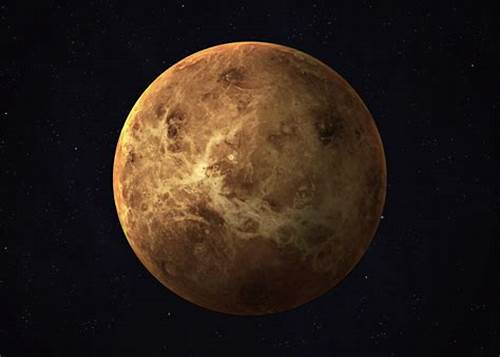
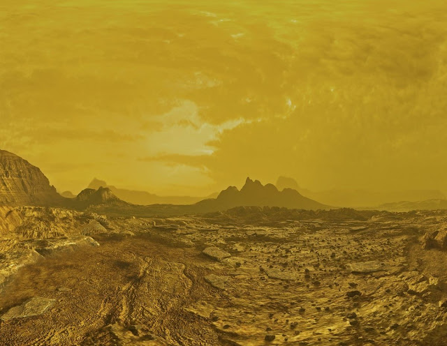
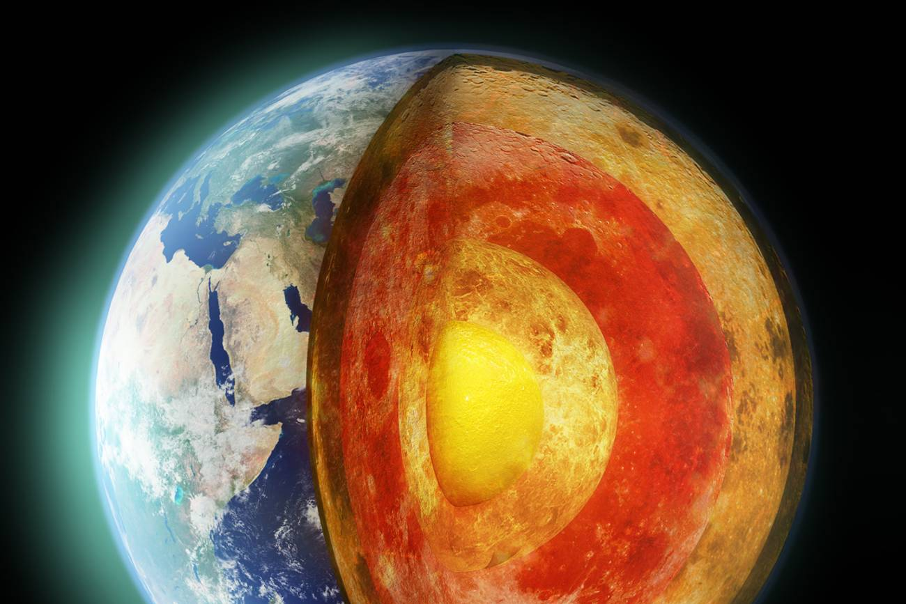
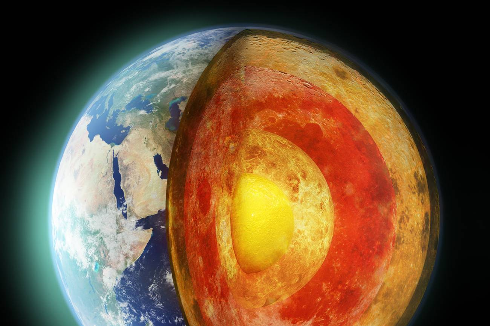

Mercury
Mercury is the smallest planet in our Solar System and the closest to the Sun. It has a rocky surface and no atmosphere, making it a barren world.


Venus
Venus is the second planet from the Sun and is often called Earth's twin because of its similar size. However, its thick, toxic atmosphere makes it inhospitable.


Earth
Earth is the third planet from the Sun and the only planet known to harbor life. Its atmosphere and water make it unique in the Solar System.
 

Mars
Mars, the fourth planet from the Sun, is known as the Red Planet due to its reddish appearance caused by iron oxide on its surface.